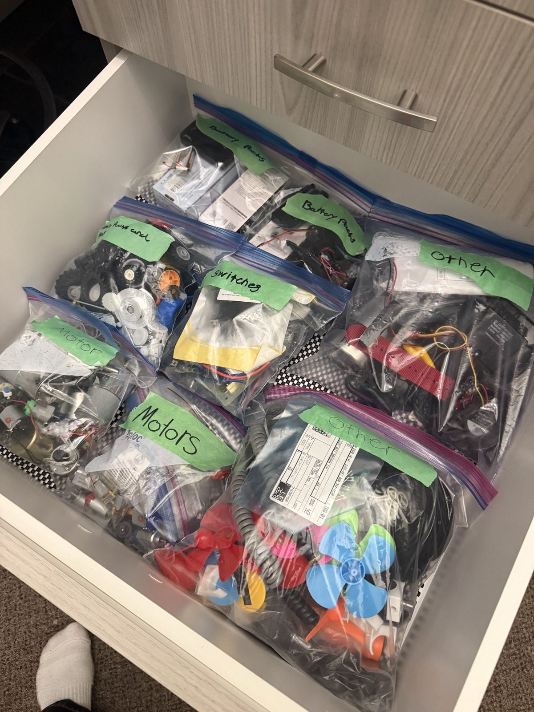
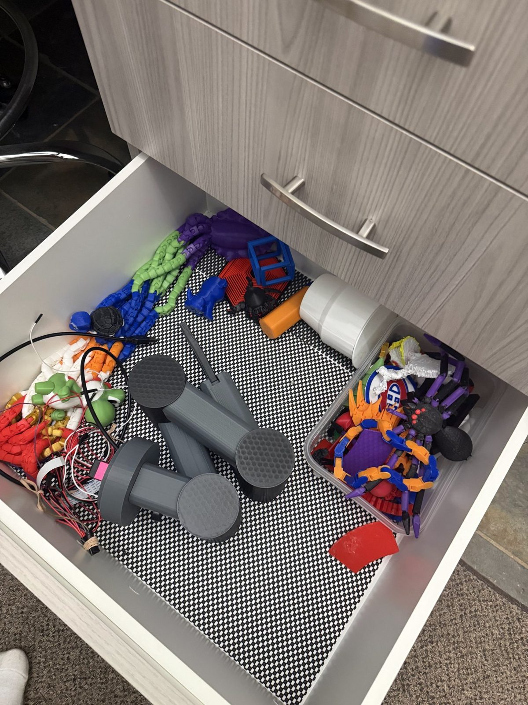

06.1 · about age 11
Web shooters
One of my earliest builds was a set of web shooters that wound themselves back up after firing. Getting a mechanism to reset itself made me want to try bigger ideas, which later led to the suction wall climber.
Smaller and earlier projects that don’t have a page of their own yet. I’ll keep adding to this section as I document more of my work.
My bigger builds have their own pages: the robotic arm and the remote door lock. This page collects smaller and earlier projects.
One of my earliest builds was a set of web shooters that wound themselves back up after firing. Getting a mechanism to reset itself made me want to try bigger ideas, which later led to the suction wall climber.
My geared light switch, one of the items I sold, is on the 3D printing page.
I designed my own go-kart and learned to weld so I could build it. The go-kart isn’t finished yet.
The frame is welded steel, and I collected parts for the drive and steering, including a steering wheel kit, a clutch and a sprocket. Learning to weld was the main new skill from this project.
Motors, switches, gears, wheels and battery packs from earlier builds are sorted into labelled bags, and printed parts go in another drawer so they can be reused in the next project.


Most of what I’ve learned came from things that didn’t work the first time. My first claw machine cabinet never fully worked, so I started over. My first wall climber prototypes were too small to hold. My first door lock worked but wasn’t something I’d use every day. Each time, the second version was better because of what the first one showed me.